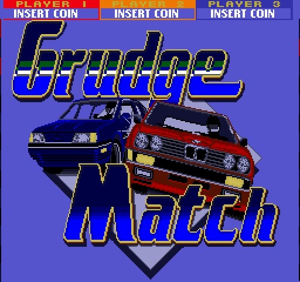
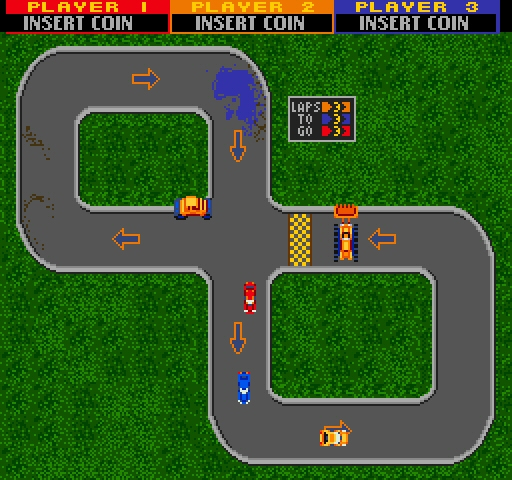

|
Grudge Match - 1987 Bally Sente Inc.
This game was never released.
My last coin-op video game. I really liked this, and a version of the game
has shown up on Mame recently, which is very cool. Originally called Race
for Pink, as in pink slips, the certificates of ownership in California.
We then realized that pink slips are not universal, so we changed the name.
I wanted to do a racing game where the winner got something from the loser.
It was a three player driving game in various places to hold a grudge race.
I only wish that we had a higher resolution monitor, as it would have been
much more fun. We did a city, a parking lot, a race track. We put the game
out at a Golf Land for an early field test, Then Bally laid off most of Sente
and the game was left at Golf Land, never to be seen by me again.
That is, until someone told me that they had it on Mame, which was VERY
cool. I liked an earlier version better however. In the Mame version, buying
parts
for your car was made VERY simple to speed up the game. In the original
version, you would see your car in a garage up on a lift, and a garage
full of parts
you could "buy" to make your car better. Better tires, better suspension,
better brakes, better engine, better transmission.
During the race, money would end up on the play field. Sometimes from an
armored car, sometimes blowing around the track. You could earn money buy
winning the race as well. As you raced, parts got "used up", and we also
allowed someone to add coins to the game to buy a better car.
We also added things on the track that made the race harder. Cars, trucks,
buses, shopping carts, etc. The better your car, the more likely something
would jump out in front of you. Collisions would knock down your car's abilities.
We never got the game finished, and I think this would have been one GREAT
driving game. I was going to make the races longer, maybe 10 laps. I was
going to add cops and traffic lights in the city. Run a red light, the cop
chases you. If he bumped you, you stopped for a while to get a ticket!
I was sorry my coin-op game career ended here as I really would have liked
to finish this game. Oh well...
Link to MAME ROM info on
mamedb.com
|
|


|

{kind=link}
{kind=link}